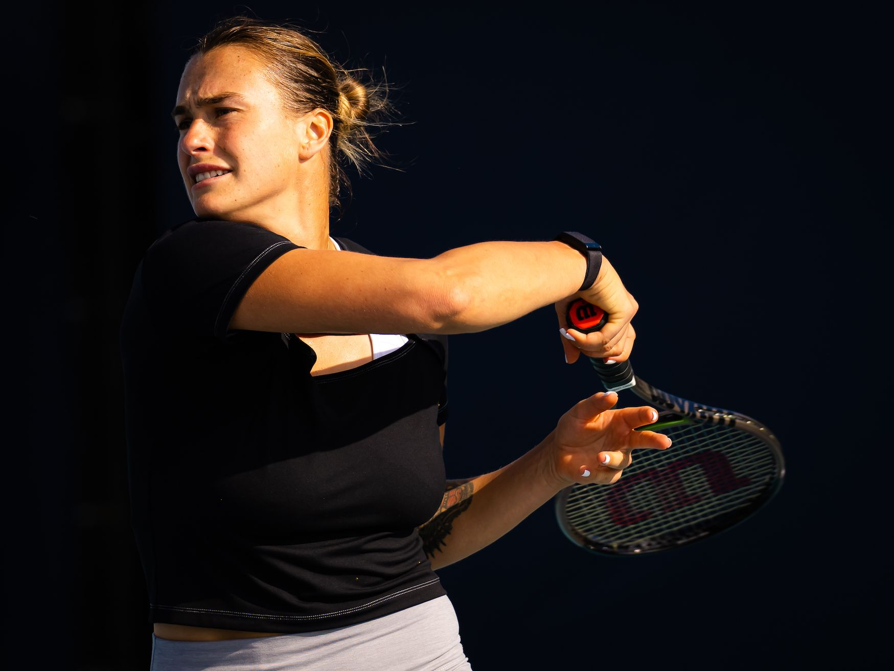

Belarus' Aryna Sabalenka defeated Kazakhstan's Elina Rybakina 4-6, 6-3, 6-4 to win the Australian Open women's singles title. This was Sabalenka's first Grand Slam tennis singles win. Sabalenka, the fifth seed, has won two Grand Slam doubles titles but never a singles title. With this victory, she now advances to the second place in the overall rankings. Wimbledon champion Rybakina took the first set at Melbourne Park's Rod Laver Arena but Sabalenka easily took the second set before the deciding final came down to the wire. Legendary tennis player Billie Jean King presented Sabalenka with her award.
Tennis player Aryna Siarhiejena Sabalenka is from Belarus. The Women's Tennis Association has placed her as high as No. 2 in the world in singles and No. 1 in the world in doubles (WTA). In addition to two major doubles championships with Elise Mertens at the 2019 US Open and 2021 Australian Open, Sabalenka has one major singles victory from the 2023 Australian Open. Twelve of her 18 career victories have been in singles play, while six have been in doubles. Sabalenka had a modest level of fame up until 2017, when she and Aliaksandra Sasnovich, who were both below the top 75 at the time, helped the Belarus Fed Cup team to a runner-up result. She started to see greater success on the WTA Tour after the 2017 Fed Cup, making it to four finals and earning eight top-10 triumphs in 2018. Defending her Wuhan Open title at the Premier 5 level and winning the WTA Elite Trophy at the end of the year were two of Sabalenka's three victories in China in 2019. Sabalenka continued to dominate the singles game in 2019. She concluded the singles season at No. 11 in the world in both 2018 and 2019. In 2019, Sabalenka also started consistently playing doubles. She won the Miami Open and Indian Wells Open Premier Mandatory competitions in March, completing the Sunshine Double with Mertens as her partner. She also became the first player to qualify for the WTA Finals after winning the US Open doubles championship later in the year..